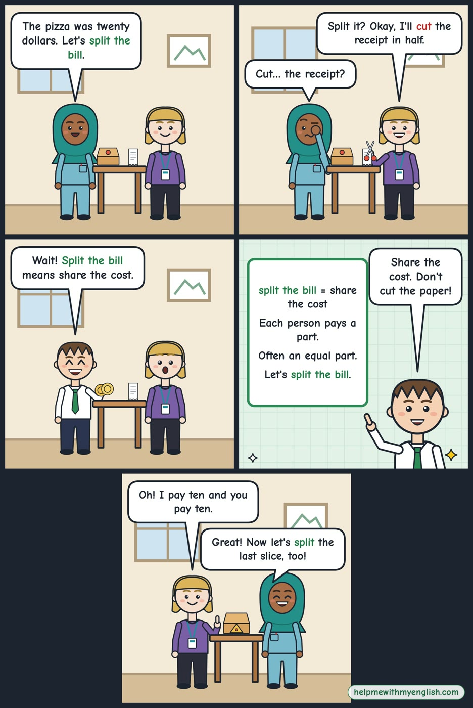

split the bill
To divide the cost between two or more people.
Let's split the bill. You pay half and I pay half.
Tip: Use it for restaurant or shared-cost situations: "Shall we split the bill?" You can also say "split it evenly" or "split it three ways" to be specific.
Hear it in conversation
AmiraThat was a great lunch. Should I ask for the check?
KofiYes, please. Do you want to split the bill?
AmiraSure, but I only had a salad. You had the big pasta and dessert.
KofiTrue. Then I'll pay a bit more. Just put in what you owe.
AmiraThanks, Kofi. I'll get the next one.
Workbook
1. What does it mean?
In this conversation, what does "split the bill" mean?
2. Fill the gap
We booked a holiday house with four friends, so we decided to equally.
3. Choose the best reply
Ken: Dinner was lovely. Shall I call the waiter over?
4. Your turn: speak
When you go out with friends, how do you usually pay? Do you prefer to share the cost or pay separately?
Show an example answer
With close friends, we usually split the bill equally because it's simple and nobody has to do any maths. If one person ordered much more than the others, we sometimes pay for what we each had instead.
Answer key: split the bill
- 1. C. To share the cost of the meal between the people who ate it
- 2. split the bill
- 3. C. Yes, and let's split the bill so it's fair.
- 4. Example: With close friends, we usually split the bill equally because it's simple and nobody has to do any maths. If one person ordered much more than the others, we sometimes pay for what we each had instead.
See it in a comic
